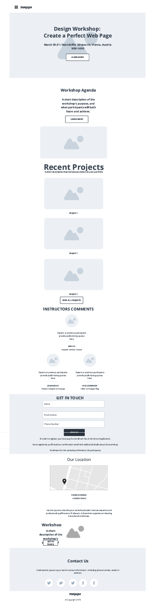
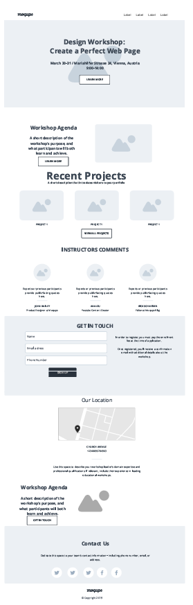

Site Name
Site Name: George Dev
Reason: The site name establishes personal branding and highlights pass projects for potential employers
Site Purpose
I believe that it is important for any professional to have a solid online presence that will present their skills and competencies in the best possible way.
Such a website is helpful because it allows me to demonstrate my competencies and skills to my future employers show them my practical coding skills and experience in developing real projects
Scenarios
- What practical coding skills does George have to offer
- How good is george coding skills
- How do i see George's projects
- How do i contact George
Color Schema
- Primary Color (#003366): Header, navigation, primary buttons, and accent borders.
- Accent Color (#ffffff): Button text, icons, navigation links, and highlights on dark backgrounds.
- Neutral Background (#cdcacd): Main page background and overall section containers.
- Neutral (#f4f4f4): for text and other neutral elements
- Dark Text (#212529): Headings, body text, paragraph content, and main navigation on light backgrounds.
- Muted Gray Text (#4a4a4a): Subheadings, captions, secondary descriptions, and dates.
Color Scheme Used on Document
- Primary Color (#003366): Header, navigation, primary buttons, and accent borders.
- Accent Color (#ffffff): Button text, icons, navigation links, and highlights on dark backgrounds.
- Neutral Background (#cdcacd): Main page background and overall section containers.
- Neutral (#f4f4f4): for text and other neutral elements
- Dark Text (#212529): Headings, body text, paragraph content, and main navigation on light backgrounds.
- Muted Gray Text (#4a4a4a): Subheadings, captions, secondary descriptions, and dates.
Typography
- The whole page:Roboto / Sans-Serif
- Headings:Georgia, Times New Roman, Times, serif
Typography Used Plan Document
- The whole page:Roboto / Sans-Serif
- Headings:Georgia, Times New Roman, Times, serif
Wireframe
Design structure adapted from the project wireframe template:

